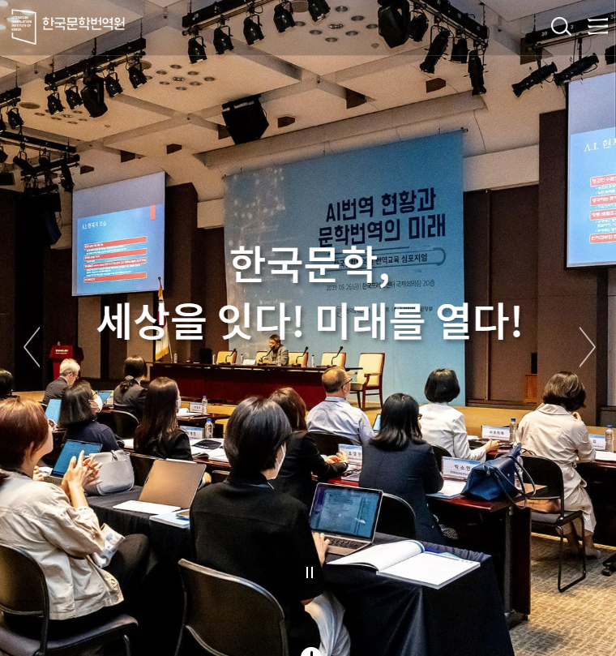
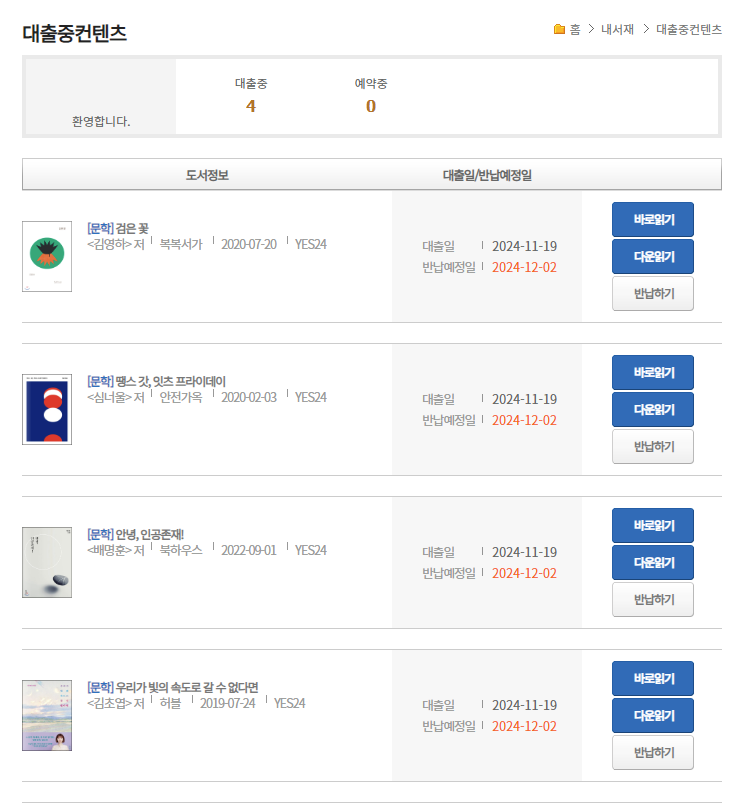

안녕하세요 오늘은 한국문학번역원을 소개해드리겠습니다.
한국문학번역원은 1996년 설립 이후 '한국문학의 발전과 세계화'라는 목표 아래 한국 문학과 문화를 세계에 알리고 세계 문화 형성에 기여하기 위해 꾸준히 노력해온 기관입니다. 문화체육관광부 소관의 특수법인으로, 서울특별시 강남구에 위치하고 있습니다.
한국문학번역원
한국문학 번역 및 해외출판 지원
www.ltikorea.or.kr

주요 사업 및 성과
한국문학번역원의 주요 사업은 크게 네 가지로 나눌 수 있습니다:
- 번역 및 출판 지원
- 국제 교류 사업
- 번역가 양성
- 한국문학 해외 홍보
번역 및 출판 지원
번역원은 한국 문학작품의 번역과 출판을 적극 지원하고 있습니다. 문학, 인문사회, 아동·청소년 소설, 장르문학 등 다양한 장르의 도서 번역을 지원하며, 해외 출판사들이 한국 도서의 저작권을 구매하여 번역 출간할 수 있도록 출판 비용도 지원하고 있습니다.
국제 교류 사업
국제 도서전 참가, 해외 문학 행사 개최, 해외 출판인들과의 교류 등을 통해 한국문학의 세계화를 위한 다양한 활동을 펼치고 있습니다.
번역가 양성
LTI Korea 번역아카데미를 통해 우수한 번역 인력을 양성하고 있습니다. 정규과정, 특별과정, 번역아틀리에 등 다양한 프로그램을 운영하여 전문 번역가를 육성하고 있습니다.
한국문학 해외 홍보
한국문학 다국어 콘텐츠 아카이브를 운영하여 세계 각국에서 번역 출간된 한국문학 정보를 제공하고 있습니다. 또한 오디오북, e-book, 북 트레일러 등 다양한 매체를 활용하여 한국문학을 해외에 소개하고 있습니다.
주요 성과
한국문학번역원의 노력 덕분에 한국문학은 세계 무대에서 눈부신 성과를 거두고 있습니다. 2024년 한강 작가의 노벨문학상 수상은 그 정점이라고 할 수 있습니다. 이외에도 다음과 같은 성과들이 있었습니다:
- 프랑스에서 한강의 작별하지 않는다 - "Impossibles Adieux"가 에밀 기메 상 수상
- 김혜순 시인의 날개 환상통 - "Phantom Pain Wings"가 미국 전국도서비평가협회상 수상 (한국 시인 최초)
- 황보름의 "환영합니다, 휴남동 서점입니다"가 일본 서점대상 수상
- 황석영의 "마터 2-10"이 국제 부커상 후보에 오름
미래 비전
한국문학번역원은 '세계문학으로서의 한국문학의 장을 여는 중추 기관'이라는 비전 아래, 다음과 같은 목표를 가지고 있습니다:
- 한국문학 번역 출판 지원 체계 고도화
- 한국문학 미래 가치창출 기반 강화
- 한국문학 및 한국어 콘텐츠의 개방 및 활용도 제고
- 혁신 기반의 경영 관리 역량 고도화
이를 위해 한국문학 캐논 리스트 제공, 한국문학과 문화에 대한 이해 증진을 위한 콘텐츠 개발, 해외 유관 기관들과의 교류 활성화 등 새로운 시도를 추진하고 있습니다.
전자도서관 추천
사실 한강 작가의 책을 볼 수 있는 전자도서관을 찾다가 발견한 곳인데, 한강 작가의 책들을 볼 수 있(지만 예약 대기줄이 깁니다..)습니다. 그 외에도 한국 작가들의 대부분의 책을 전자도서관에 가입(가입이 쉽습니다.)해서 볼 수 있으니 전자책을 자주 보시는 분들에게 추천드립니다. 제가 좋아하는 한국 작가들 김영하, 심너울, 배명훈, 김초엽의 책을 대여해서 출퇴근 시간에 보고 있습니다.
한국문학번역원 전자책도서관
9 칵테일, 러브, 좀비 조예은 저
ltikorea.yes24library.com

맺음말
한국문학번역원은 지난 25년간의 성과를 바탕으로 앞으로의 25년을 준비하고 있습니다. '문학 한류'라고 불리는 한국문학의 세계화 흐름 속에서, 번역원은 한국문학이 세계 문학 시장에서 더욱 확고한 위치를 차지할 수 있도록 끊임없이 노력하고 있습니다. 한국문학번역원의 이러한 노력은 한국 문화의 세계화에 크게 기여하고 있으며, 앞으로도 한국문학의 글로벌 위상을 높이는 데 중요한 역할을 할 것으로 기대됩니다.